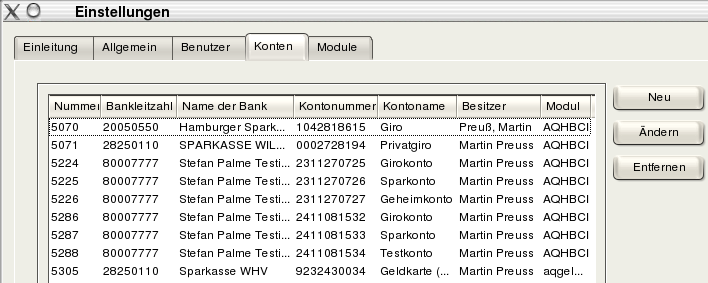

Einstellungen
Dieser Dialog ermöglicht die Konfiguration Ihrer Onlinebanking-Zugänge und
enthält die folgenden Seiten:
-
Einleitung (enthält allgemeine Hinweise zum Dialog)
[immer vorhanden]
-
Benutzer
(Liste von Benutzern)
[immer vorhanden]
-
Konten
(Liste von Konten)
[immer vorhanden]
-
Module
(Liste von Banking-Modulen)
[immer vorhanden]
(zum Seitenanfang)
Benutzer

Diese Seite zeigt eine Liste der verfügbaren Benutzer und erlaubt das
anlegen, ändern und entfernen von Benutzern.
Benutzerliste
Diese Liste enthält die folgenden Spalten:
-
Bank: Bankleitzahl/Bankenstammnummer der Bank, zu der der
Benutzer gehört
- Id: Benutzerkennung
-
Kundenkennung: Optionale Kundenkennung (nicht alle Banking-Module
und nicht alle Banken verwenden diese)
-
Modul: Banking-Modul, das für diesen Benutzer zuständig ist
Knöpfe
Auf dieser Seite finden Sie die folgenden Knöpfe:
-
Neu: Legen Sie einen neuen Benutzer an. Im nächsten Schritt werden
Sie dann nach dem Banking-Modul gefragt, für das Sie den Benutzer erzeugen
wollen.
-
Ändern: Ändern Sie die Einstellungen für den ausgewählten
Benutzer.
-
Entfernen: Entfernen Sie den gewählten Benutzer.
(zum Seitenanfang)
Konten

Diese Seite zeigt eine Liste der verfügbaren Konten und erlaubt das
anlegen, ändern und entfernen von Konten.
Kontenliste
Diese Liste enthält die folgenden Spalten:
-
Nummer: Diese eindeutige Nummer identifiziert das Konto innerhalb
von AqBanking. Es gibt keine zwei Konten mit der gleichen Nummer.
-
Bankleitzahl: Bankleitzahl/Bankenstammnummer der Bank, bei der das
Konto geführt wird
-
Name der Bank: Wie erwartet.
-
Kontonummer: Diese Nummer identifiziert das Konto bei den meisten
europäischen Banken.
-
Kontoname: Name des Kontos. In manchen Ländern wird keine
Kontonummer verwendet, Konten werden dort stattdessen über deren
Namen identifiziert.
- Id: Benutzerkennung
-
Besitzer: Vollständiger Name des Besitzers des Kontos, wie er bei
der Bank hinterlegt ist.
-
Modul: Banking-Modul, das für dieses Konto zuständig ist
Knöpfe
Auf dieser Seite finden Sie die folgenden Knöpfe:
-
Neu: Legen Sie ein neues Konto an. Im nächsten Schritt werden
Sie dann nach dem Banking-Modul gefragt, für das Sie das Konto erzeugen
wollen.
-
Ändern: Ändern Sie die Einstellungen für das ausgewählte
Konto.
-
Entfernen: Entfernen Sie das gewählte Konto.
(zum Seitenanfang)
Module

Diese Seite zeigt eine Liste der verfügbaren Banking-Module und erlaubt
deren Aktivierung und Deaktivierung.
Modul-Liste
Diese Liste enthält die folgenden Spalten:
-
Name: Name des Modules, er dient der Identifierung des Modules
innerhalb von AqBanking
-
Version: Version des Modules (meist die Version von AqBanking)
-
Aktiv: Zeigt an, ob das Modul derzeit aktiv ist (ja) oder
nicht (nein)
-
Autor: Autor des Modules (meist Martin Preuss)
-
Beschreibung: Kurze Beschreibung des Modules
Knöpfe
Auf dieser Seite finden Sie die folgenden Knöpfe:
(zum Seitenanfang)